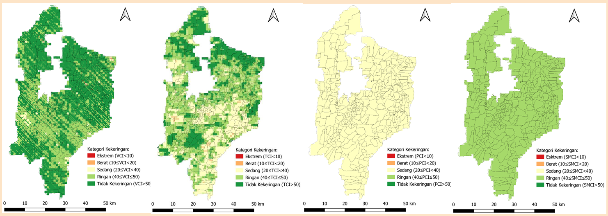
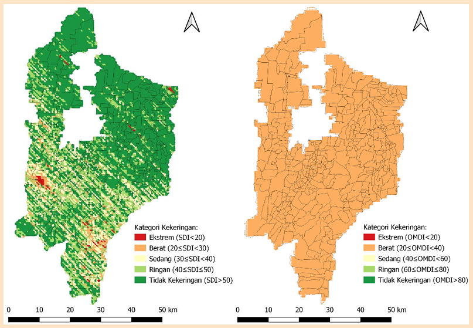
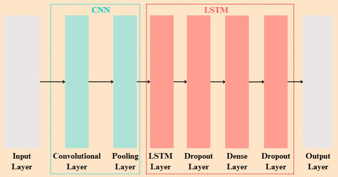
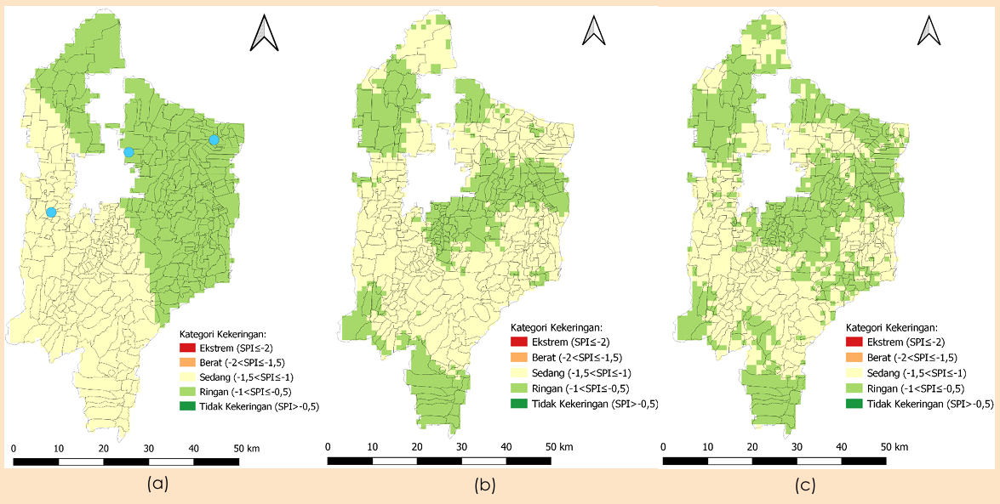
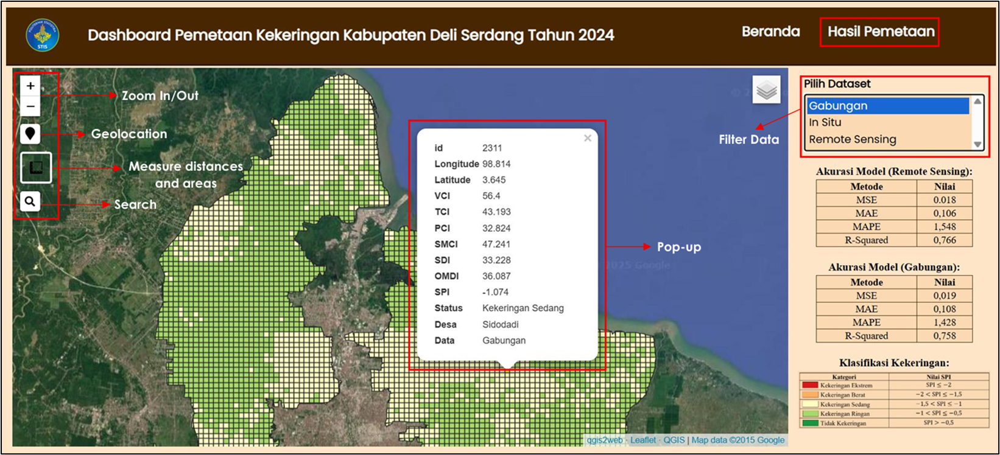

Selamat Datang di Dashboard Pemetaan Wilayah Kekeringan
Kabupaten Deli Serdang Tahun 2024
Kekeringan merupakan fenomena alam yang disebabkan penurunan curah
hujan dari tingkat normal, sehingga mengakibatkan kekurangan air
untuk memenuhi kebutuhan manusia dan lingkungan. Hal tersebut dapat
mengancam berbagai aspek kehidupan dan ekosistem alam yang berisiko
menyebabkan kemunduran dan degradasi tanah, kelangkaan air,
penggurunan, perusakan vegetasi, badai pasir, kebakaran hutan,
penurunan produktivitas tanaman pangan, dan fenomena bencana
lainnya. Oleh karena itu, dashboard ini dibangun untuk
membantu pemerintah daerah dalam memantau kekeringan di Kabupaten
Deli Serdang tahun 2024 serta meningkatkan upaya mitigasi yang
efektif dan tepat waktu. Visualisasi spasial berupa pemetaan wilayah
kekeringan pada dashboard ini merupakan hasil prediksi
kekeringan berbasis in situ dan
remote sensing menggunakan algoritma
deep learning yaitu
Convolutional Long Short-Term Memory.
Terdapat 2 sumber data utama, yaitu data in situ yang
berasal dari 3 stasiun BMKG di Kabupaten Deli Serdang dan data
remote sensing yang diperoleh dari citra satelit
multisumber. Data-data tersebut dikumpulkan dalam rentang waktu 1
Janurari hingga 31 Desember 2022.
Tabel 1. Sumber data yang digunakan dalam penelitian
No.
Data
Sumber
Resolusi Spasial
Resolusi Temporal
Tipe Data
Indeks yang Dibentuk
Faktor
Referensi
1.
Curah Hujan
BMKG
-
Harian
In situ
SPI, SPEI
Presipitasi dan kadar air tanah (PET)
Liu et al. (2021)
2.
Temperatur Minimum
BMKG
-
Harian
SPEI
Wahla et al. (2022)
3.
Temperatur Maksimum
BMKG
-
Harian
SPEI
Wahla et al. (2022)
4.
MOD13A1.061 (MODIS-NDVI)
MODIS-Terra
500 m
16 hari
Remote sensing
VCI
Vegetasi
Jalayer et al. (2023)
5.
Precipitation
CHIRPS Pentad
0,05°
Harian
PCI
Presipitasi
Baig et al. (2020)
6.
MOD11A2.061 (MODIS-LST)
MODIS-Terra
1 km
8 hari
TCI
Temperatur
Kloos et al. (2021)
7.
Soil Moisture (in soil layer of 100–200cm)
GLDAS-2.1
0,25°
3 jam
SMCI
Kelembapan tanah
Jalayer et al. (2023)
Data-data pada Tabel 1 digunakan untuk membentuk indeks kekeringan
tuggal berbasis in situ, indeks kekeringan tunggal berbasis
remote sensing, dan indeks kekeringan gabungan yang akan
digunakan sebagai varibael input dalam pembangunan model
deep learning.
Indeks Kekeringan Tunggal Berbasis Remote Sensing
Indeks kekeringan tunggal berbasis
remote sensing terdiri dari VCI, TCI, PCI, dan SMCI. Indeks
tersebut diperoleh melalui ekstraksi data citra satelit dengan
pendekatan piksel 500 x 500m untuk setiap desa/kelurahan. Berikut
penjelasan mengenai masing-masing indeks kekeringan tersebut.
1. Vegetation Condition Index (VCI)
Vegetation Condition Index (VCI) merupakan indeks
vegetasi yang diperoleh melalui perbandingan nilai NDVI pada periode
tertentu dengan nilai NDVI maksimum dan minimum pada periode
keseluruhan. NDVI merupakan salah satu band yang
terdapat pada produk MOD13A1. VCI menormalisasi NDVI dan memisahkan
sinyal ekologis jangka panjang dari sinyal iklim jangka pendek yang
terbukti lebih baik untuk memantau kondisi stres air dibandingkan
dengan NDVI.
2. Temperature Condition Index (TCI)
Temperature Condition Index (TCI) merupakan indikator
tekanan termal berbasis remote sensing yang digunakan
untuk mengukur tekanan air pada vegetasi sebagai akibat dari
temperatur permukaan tanah yang meningkat. TCI dihitung berdasarkan
data citra satelit yang diperoleh dari MOD11A2. Penghitungan TCI
melibatkan nilai Land Surface Temperature (LST) yaitu
suhu permukaan tanah yang telah melalui proses
smoothing selama delapan hari, nilai LST maksimum dan
minimum dalam skala bulanan.
3. Precipitation Condition Index (PCI)
Precipitation Condition Index (PCI) merupakan indeks
kekeringan yang dinormalisasi menggunakan data CHIRPS. Indeks
tersebut dihitung untuk menjelaskan defisit curah hujan selama suatu
periode dari sinyal iklim. Nilai piksel curah hujan CHIRPS, CHIRPS
maksimum, dan CHIRPS minimum, masing-masing dihitung berdasarkan
skala bulanan.
4. Soil Moisture Condition Index (SMCI)
Soil Moisture Condition Index (SMCI) adalah indeks yang
digunakan untuk menunjukkan ketersediaan kelembaban tanah dengan
mempertimbangkan nilai NDVI dan
Land Surface Temperature (LST). SMCI melibatkan nilai
Soil Moisture (SM) yang berasal dari
Global Land Data Assimilation System (GLDAS).

Gambar 1. Visualisasi Sebaran Indeks Kekeringan Tunggal Berbasis
Remote Sensing di Kabupaten Deli Serdang Tahun 2022
Indeks Kekeringan Tunggal Berbasis In Situ
Indeks kekeringan tunggal berbasis in situ yang digunakan
sebagai variabel dependen yaitu SPI. Indeks tersebut diperoleh melalui
pengolahan data in situ berupa curah hujan menggunakan
software RStudio (package SPEI). Berikut penjelasan
mengenai indeks kekeringan tersebut.
1. Standardized Precipitation Index (SPI)
Standardized Precipitation Index (SPI) merupakan
indikator yang merepresentasikan probabilitas terjadinya curah hujan
dalam periode waktu tertentu di suatu wilayah. Indikator ini
memiliki keunggulan berupa perhitungan yang sederhana. Namun, SPI
sensitif terhadap perubahan kekeringan sehingga cocok digunakan
untuk pemantauan kekeringan serta penilaian kondisi iklim pada skala
waktu bulanan atau lebih. Penghitungan SPI melibatkan curah hujan
bulanan dengan distribusi gamma yang bertujuan untuk
menganalisis defisit curah hujan pada rentang waktu yang berbeda.
Gambar 2. Visualisasi Sebaran Indeks Kekeringan Tunggal Berbasis
In Situ di Kabupaten Deli Serdang Tahun 2022
Indeks Kekeringan Gabungan
Indeks kekeringan gabungan yang dibentuk yaitu SDI dan OMDI. SDI
dibentuk melalui PCA, sedangkan OMDI diperoleh melalui
Optimization Weight Method. Berikut penjelasan mengenai
masing-masing indeks kekeringan tersebut.
1. Synthesized Drought Index (SDI)
Synthesized Drought Index (SDI) didefinisikan sebagai
komponen utama dari indeks vegetasi (VCI), indeks suhu (TCI), dan
indeks curah hujan (PCI). SDI juga digunakan sebagai indikator untuk
mengamati karakteristik spasial kekeringan agrikultural. Proses
pembentukan SDI melibatkan
Principal Component Analysis (PCA). Metode tersebut
digunakan untuk mengesktrak informasi utama dari VCI, TCI, dan PCI.
2. Optimized Meteorological Drought Index (OMDI)
Optimized Meteorological Drought Index (OMDI) merupakan
indeks kekeringan gabungan berbasis gelombang mikro multisensor pada
remote sensing. Indeks tersebut digunakan untuk
menganalisis tren kekeringan meteorologi. OMDI mengintegrasikan
beberapa indeks kekeringan tunggal, seperti TCI, PCI, dan SMCI
menggunakan Constrained Optimization Method atau metode
optimasi terbatas untuk menyempurnakan parameter variabel
penginderaan jauh. Proses ini dilakukan melalui penggabungan
variabel-variabel tersebut dengan memaksimalkan korelasi terhadap
indeks in situ yaitu SPI atau SPEI sebagai data
referensi.

Gambar 3. Visualisasi Sebaran Indeks Kekeringan Gabungan di Kabupaten
Deli Serdang Tahun 2022
Tabel 2. Klasifikasi Kekeringan
No.
Kategori
VCI
TCI
PCI
SMCI
SDI
OMDI
SPI
1.
Kekeringan Ekstrem
VCI < 10
TCI < 10
PCI < 10
SMCI < 10
SDI < 20
OMDI < 20
SPI ≤ -2
2.
Kekeringan Berat
10 ≤ VCI < 20
10 ≤ TCI < 20
10 ≤ PCI < 20
10 ≤ SMCI < 20
20 ≤ SDI < 30
20 ≤ OMDI < 40
-2 < SPI ≤ -1,5
3.
Kekeringan Sedang
20 ≤ VCI < 40
20 ≤ TCI < 40
20 ≤ PCI < 40
20 ≤ SMCI < 40
30 ≤ SDI < 40
40 ≤ OMDI < 60
-1,5 < SPI ≤ -1
4.
Kekeringan Ringan
40 ≤ VCI ≤ 50
40 ≤ TCI ≤ 50
40 ≤ PCI ≤ 50
40 ≤ SMCI ≤ 50
40 ≤ SDI ≤ 50
60 ≤ OMDI ≤ 80
-1 < SPI ≤ -0,5
5.
Tidak Kekeringan
VCI > 50
TCI > 50
PCI > 50
SMCI > 50
SDI > 50
OMDI > 80
SPI > -0,5
Tabel 2 di atas menunjukkan klasifikasi kekeringan berdasarkan nilai
dari berbagai indeks kekeringan yang digunakan.
Model Prediksi (Convolutional Long Short-Term Memory)
Pembangunan model ConvLSTM dilakukan menggunakan dua dataset. Variabel
independen pada dataset 1 hanya berasal dari data
remote sensing, sedangkan pada dataset 2
berasal dari data remote sensing dan in situ.
VAriabel independen pada dataset 1 terdiri dari VCI, TCI,
PCI, dan SMCI, sedangkan dataset 2 terdiri dari VCI, TCI,
PCI, SMCI, SDI, dan OMDI. Masing-masing dataset terdiri dan 10.383
baris. Pembagian data menjadi data latih, data uji, dan data validasi
dalam pembangunan model masing-masing menggunakan proporsi 80%, 10%, dan
10%. Hasilnya adalah data latih terdiri dari 8.306 baris, data uji
terdiri dari 1.038 baris, dan data validasi terdiri dari 1.039 baris.

Gambar 4. Arsitektur Model ConvLSTM yang Dikembangkan Peneliti
Berdasarkan Gambar 4, arsitektur model ConvLSTM yang kembangkan oleh
peneliti menerapkan 8 lapisan yang terdiri dari 1
convolutional layer, 1 pooling layer, 1
LSTM layer, 1 dense layer, dan 2
dropout layer. Pembangunan model ConvLSTM ini juga
memanfaatkan metode Bayesian Optimization untuk
hyperparameter tuning
guna mendapatkan kombinasi dari hyperparameter yang
optimal. Berikut merupakan gambar arsitektur model ConvLSTM yang
dikembangkan peneliti dalam memprediksi kekeringan di Kabupaten Deli
Serdang.
Hasil Evaluasi Model
Evaluasi model ConvLSTM yang berhasil dibangun dengan
hyperparameter optimal dilakukan dengan metrik evaluasi
berupa Mean Square Error (MSE),
Mean Absolute Error (MAE),
Mean Absolute Percentage Error (MAPE), dan Koefisien
Determinasi (R-Squared). Hasil evaluasi menunjukkan bahwa
model ConvLSTM yang dikembangkan peneliti memberikan performa terbaik
dibandingkan model deep learning lainnya pada kedua
dataset, sehingga model ini akan digunakan untuk memprediksi kekeringan
di Kabupaten Deli Serdang pada tahun 2024. Tabel 3 dan 4 berikut
menunjukkan hasil evaluasi dan perbandingan performa model
deep learning pada kedua dataset.
Tabel 3. Hasil Evaluasi Performa Model
Deep Learning
Pada
Dataset 1
No.
Model Deep Learning
MSE
MAE
MAPE
R-Squared
1.
ConvLSTM yang Dikembangkan Peneliti
0,018
0,106
1,548
0,766
2.
ConvLSTM Zhang et al. (2023)
0,019
0,100
1,656
0,763
3.
LSTM Zhang et al. (2023)
0,019
0,104
1,640
0,763
4.
DFNN Prodhan et al. (2021)
0,023
0,113
1,681
0,712
Tabel 4. Hasil Evaluasi Performa Model
Deep Learning
Pada
Dataset 2
No.
Model Deep Learning
MSE
MAE
MAPE
R-Squared
1.
ConvLSTM yang Dikembangkan Peneliti
0,019
0,108
1,428
0,758
2.
ConvLSTM Zhang et al. (2023)
0,020
0,104
1,440
0,751
3.
LSTM Zhang et al. (2023)
0,050
0,159
1,880
0,381
4.
DFNN Prodhan et al. (2021)
0,023
0,119
1,912
0,715
Pemetaan Hasil Prediksi Kekeringan Tahun 2024
Hasil prediksi kekeringan di Kabupaten Deli Serdang tahun 2024 dengan
model ConvLSTM terbaik berupa SPI di titik centroid pada setiap grid 500
x 500m. Nilai SPI tersebut kemudian diinterpolasi menggunakan metode
Inverse Distance Weighted (IDW) pada
software QGIS. Visualisasi spasial berupa pemetaan wilayah
kekeringan dengan lima kategori dapat dilihat pada gambar di bawah.

Gambar 5. Pemetaan Kekeringan Tahun 2024 Berdasarkan Interpolasi Data
In Situ (a), Estimasi Menggunakan Dataset 1
(b), dan Estimasi Menggunakan Dataset 2 (c).
Berdasarkan Gambar 5 di atas, pemetaan kekeringan dengan tiga pendekatan
data menunjukkan perbedaan signifikan di beberapa wilayah. Interpolasi
data
in situ dari tiga stasiun pengamatan yang berada pada
lokasi titik-titik biru menunjukkan 50,10% wilayah mengalami kekeringan
sedang di barat laut hingga timur, sementara 49,90% mengalami kekeringan
ringan di tenggara hingga barat. Keterbatasan stasiun pengamatan
menyebabkan pola sebaran kekeringan yang lebih homogen. Sebaliknya,
pemetaan menggunakan data remote sensing dan gabungan
menunjukkan pola kekeringan yang lebih bervariasi, sehingga memberikan
gambaran yang lebih detail untuk prediksi tahun 2024. Pemetaan hasil
prediksi dengan dataset 1 menunjukkan bahwa 56,12% wilayah mengalami
kekeringan sedang dan 43,88% lainnya mengalami kekeringan ringan.
Sementara itu, pemetaan hasil prediksi dengan dataset 2 menunjukkan
bahwa 45,32% wilayah mengalami kekeringan sedang dan 54,68% lainnya
mengalami kekeringan ringan. Hasil validasi dengan
ground truth menunjukkan bahwa hasil prediksi menggunakan
dataset 2 yaitu indeks kekeringan tunggal berbasis
remote sensing dan indeks kekeringan gabungan paling sesuai
dengan kondisi aktual di lapangan dibandingkan interpolasi data
in situ dan hasil prediksi dengan data
remote sensing saja. Gabungan data in situ dan
remote sensing terbukti lebih efektif dalam menangkap
variasi spasial kekeringan secara komprehensif.
Fitur-Fitur Pada Menu Hasil Pemetaan

Gambar 6. Fitur-Fitur Pada Menu Hasil Pemetaan
Gambar 6 di atas memperlihatkan tampilan dashboard pada menu “Hasil
Pemetaan”. Halaman tersebut berisi peta interaktif yang berisi beberapa
fitur yang meliputi zoom in/out, geolocation, measure distances and
areas, search, pop-up, dan filter data. Berikut penjelasan mengenai
masing-masing fitur tersebut.
1. Filter Data
Fitur ini memungkinkan pengguna untuk menampilkan hasil pemetaan
kekeringan tahun 2024 yang relevan dengan kriteria yang ditentukan.
Opsi "Gabungan" akan menampilkan pemetaan dari hasil estimasi
menggunakan dataset 2 di mana variabel independen yang
digunakan berasal dari gabungan data in situ dan
remote sensing. Sementara itu, opsi "In Situ" akan
menampilkan pemetaan dari hasil interpolasi data
in situ, sedangkan opsi "Remote Sensing" akan
menampilkan pemetaan dari hasil estimasi menggunakan
dataset 1 di mana variabel independen yang digunakan
berasal dari data remote sensing.
2. Zoom In/Out
Fitur ini memungkinkan pengguna untuk memperbesar atau memperkecil
tampilan peta sesuai kebutuhan. Dengan fitur ini, pengguna dapat
melihat detail lokasi secara lebih jelas atau mendapatkan gambaran
umum wilayah yang lebih luas. Selain itu, navigasi menjadi lebih
fleksibel sehingga dapat membantu dalam eksplorasi dan analisis data
geospasial secara lebih efektif.
3. Geolocation
Fitur geolocation memungkinkan pengguna untuk mengetahui lokasi
mereka secara real-time di dalam peta. Dengan mengaktifkan fitur
ini, pengguna dapat dengan mudah menemukan posisi mereka dan melihat
informasi terkait wilayah sekitar. Fitur ini sangat berguna untuk
navigasi atau dalam menganalisis data spasial berdasarkan lokasi
pengguna.
4. Measure Distances and Areas
Fitur yang memungkinkan pengguna untuk mengukur jarak antara dua
titik atau menghitung luas suatu area langsung di dalam peta. Dengan
fitur ini, pengguna dapat melakukan perhitungan spasial secara
interaktif, seperti menghitung luas wilayah kekeringan. Hasil
pengukuran ditampilkan secara real-time sehingga memudahkan dalam
pengambilan keputusan berbasis lokasi.
5. Search
Fitur pencarian memudahkan pengguna dalam menemukan nama tempat atau
lokasi tertentu dalam peta. Dengan memasukkan kata kunci, sistem
akan menampilkan hasil yang relevan secara cepat dan akurat.
6. Pop-up
Fitur pop-up menyediakan informasi terkait kekeringan di suatu
wilayah ketika pengguna mengklik wilayah tersebut. Informasi ini
mencakup longitude, latitude, VCI, TCI, PCI, SMCI, SDI, OMDI, SPI,
status kekeringan, nama desa, dan sumber data yang digunakan.